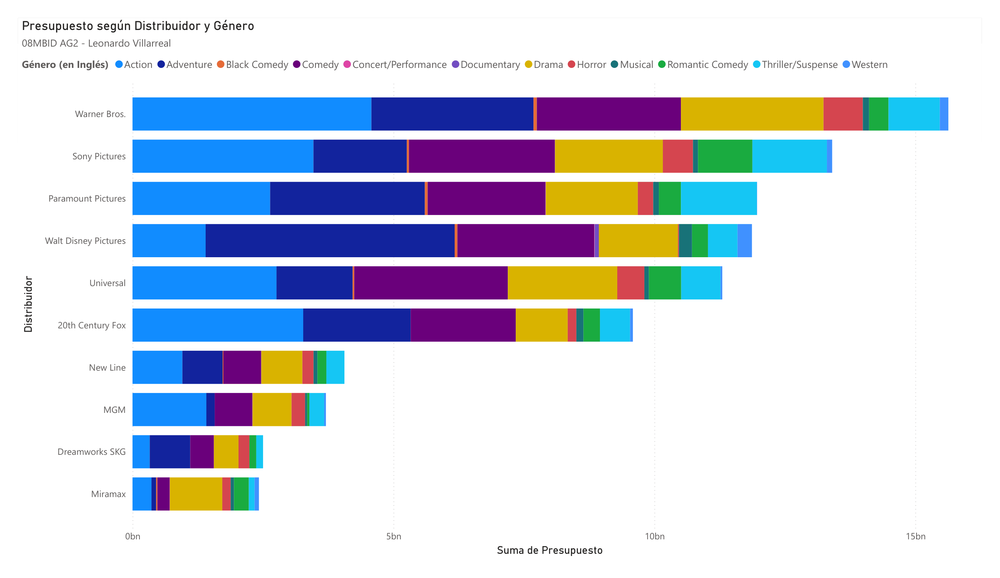
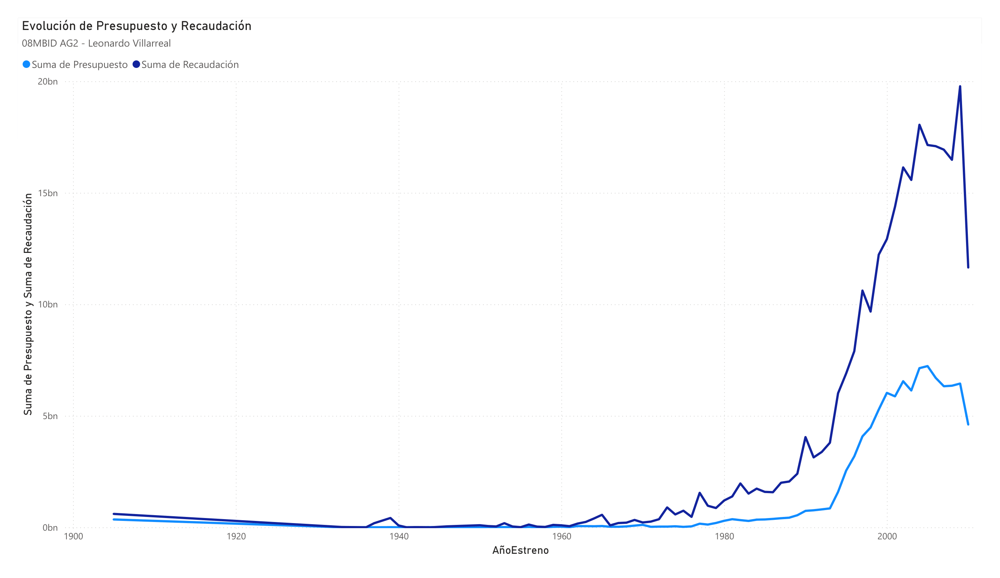
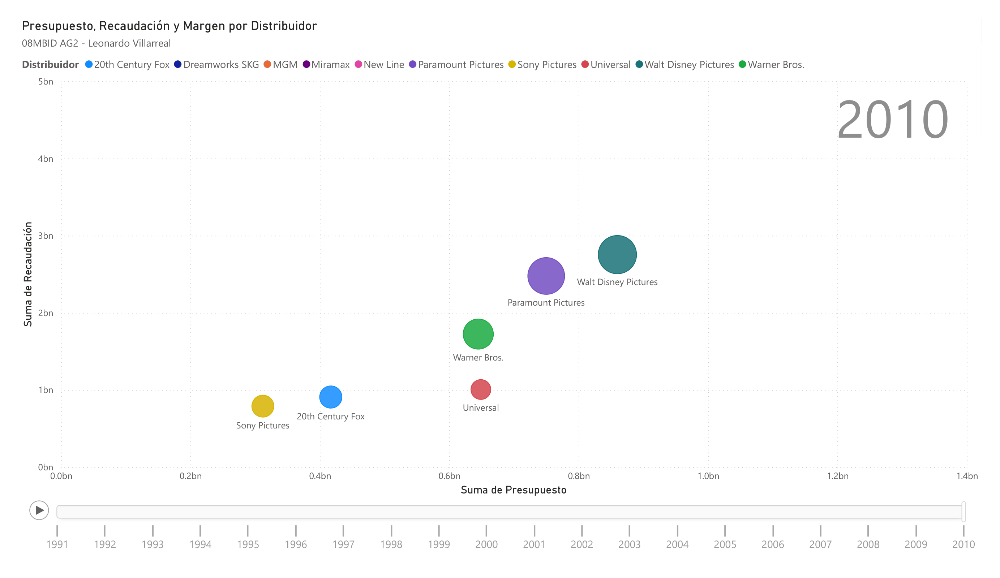

Visualizacion - AG1
Nombre: Leonardo Villarreal
Url proyecto:
my_project_url
Notas de la actividad:
- Se ha agregado el nombre en cada grafico para validar la autoria.
- Se proponen e implementan mejoras en algunos casos de acuerdo a las buenas practicas presentadas en clases.
Figura 1. Google Sheets - Grafico de barras horizontal: Emisiones de CO2 por Pais
Mejoras implementadas:
- Cambiar el color por un tono mas oscuro mejora el contraste contra la escala.
- Remover los puntos decimales de las escala, pues no aportan relevancia por la magnitud de los valores.
- Asegurar que aparezcan los nombres completos de los paises.
Figura 2. Google Sheets - Grafico combinado de barras y lineas: Cotizacion y
Volumen diarios de A y B
Mejoras implementadas:
- Cambiar colores con tonos que mejoran el contraste y asociados por categoria.
- No usar doble ejes.
Mejoras posibles:
- Usar una alternativa a google sheets para
poder crear mas de un grafico en un marco,
escalar correctamente y
colocar labels a las lineas en lugar de la leyenda (la layenda es grande).
- Validar si las magnitudes estan en las mismas unidades. Si son diferentes, separar los graficos.
Figura 3. Datawraper - Grafico de dispersion: CO2 totales vs CO2 per capita
Figura 4. Datawraper - Grafico de barras horizontal: Top 10 de paises emisores
de CO2
Visualizacion - AG2
Figura 1. PowerBI - Grafico de barras horizontal: Top 10 de presupuestos de distribuidor por genero

Figura 2. PowerBI - Grafico de lineas: Evolucion del presupuesto y recaudacion totales por año de estreno

Figura 3. PowerBI - Grafico de dispersion: Presupuesto, recaudacion y margen por distribuidor (2010)
